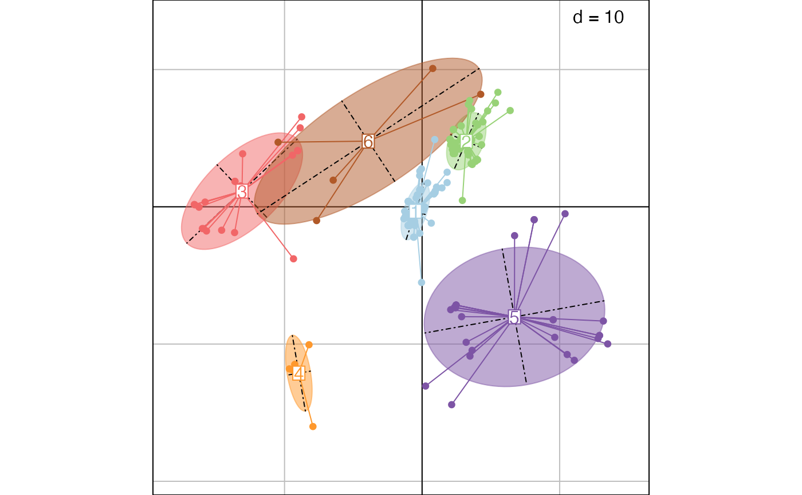
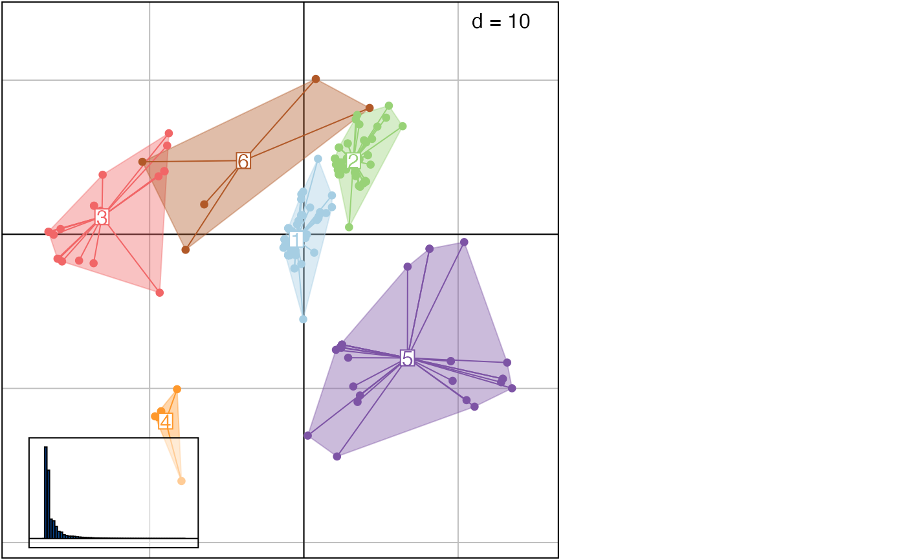

This function uses hierarchical clustering on principal components output by treespace to identify groups of similar trees. Clustering relies on hclust, using Ward's method by default.
findGroves(
x,
method = "treeVec",
nf = NULL,
clustering = "ward.D2",
nclust = NULL,
...
)an object of the class multiPhylo or the output of the function treespace
(ignored if x is from treespace) this specifies a function which outputs the summary of a tree in the form of a vector. Defaults to treeVec.
(ignored if x is from treespace) the number of principal components to retain
a character string indicating the clustering method to be used; defaults to Ward's method; see argument method in ?hclust for more details.
an integer indicating the number of clusters to find; if not provided, an interactive process based on cutoff threshold selection is used.
further arguments to be passed to treespace
A list containing:
groups: a factor defining groups of trees
treespace: the output of treespace
plotGroves to display results
if(require("adegenet") && require("adegraphics")){
## load data
data(woodmiceTrees)
## run findGroves: treespace+clustering
res <- findGroves(woodmiceTrees, nf=5, nclust=6)
## plot results on first 2 axes
PCs <- res$treespace$pco$li
s.class(PCs, fac=res$groups, col=funky(6))
## using plotGroves
plotGroves(res)
}
#> Loading required package: adegenet
#>
#> /// adegenet 2.1.10 is loaded ////////////
#>
#> > overview: '?adegenet'
#> > tutorials/doc/questions: 'adegenetWeb()'
#> > bug reports/feature requests: adegenetIssues()
#>
#>
#> Attaching package: ‘adegenet’
#> The following object is masked from ‘package:treespace’:
#>
#> .render.server.info
#> Loading required package: adegraphics
#>
#> Attaching package: ‘adegraphics’
#> The following objects are masked from ‘package:ade4’:
#>
#> kplotsepan.coa, s.arrow, s.class, s.corcircle, s.distri, s.image,
#> s.label, s.logo, s.match, s.traject, s.value, table.value,
#> triangle.class
#> The following object is masked from ‘package:ape’:
#>
#> zoom

